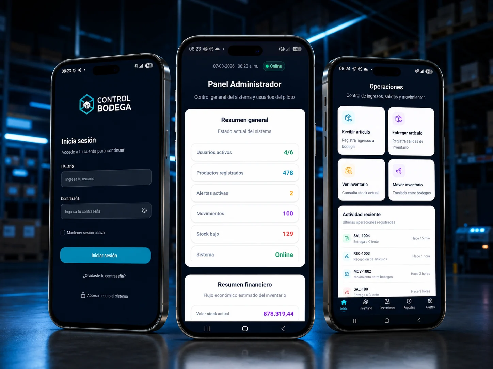

Inventario en planillas
La información se reparte entre archivos y registros manuales que no siempre representan el stock físico.
Producto ISM · Inventario y logística
Sistema web para controlar existencias, recepciones, entregas, movimientos, herramientas y responsables desde una operación centralizada. La solución puede adaptarse a bodegas, faenas, proyectos y empresas con inventario físico.

Problema → solución
El producto se configura según la forma real en que trabaja cada negocio.
La información se reparte entre archivos y registros manuales que no siempre representan el stock físico.
Entradas, salidas o entregas no quedan registradas con suficiente contexto y aparecen diferencias difíciles de explicar.
No siempre es posible saber quién realizó un movimiento, desde qué bodega y con qué destino.
El registro debe funcionar en terreno y desde dispositivos móviles, no solo desde un computador.
Capacidades
Implementamos lo que aporta valor y dejamos la arquitectura preparada para evolucionar.
Para quién está pensado
Control central de existencias y movimientos.
Materiales, herramientas y entregas por faena.
Trazabilidad de insumos y responsables.
Recepciones, transferencias y control de distribución.
Implementación
Definimos bodegas, tipos de movimiento, usuarios y reglas.
Adaptamos catálogos, permisos, stock inicial y flujos.
Habilitamos operación administrativa y móvil con trazabilidad.
Se incorporan alertas, firmas, aprobaciones e integraciones según necesidad.
Implementaciones y validación
Los clientes aparecen como casos cuando corresponde; el producto conserva una identidad propia de ISM Developer.
Implementación operativa real disponible como referencia privada. La identidad del cliente no forma parte del producto público.
Revisamos tu contexto, definimos el alcance inicial y adaptamos la solución a tus procesos, usuarios y objetivos.